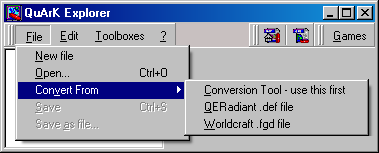
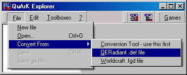
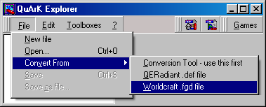
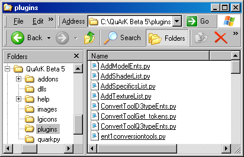

QuArK Conversion Tools
Updated 25 Jul 2009
- QuArK Information Base
- 3. Advanced customization
|
|
QuArK Conversion Tools
Updated 25 Jul 2009
|
Upper levels: - QuArK Information Base - 3. Advanced customization |
|
3.2. QuArK Conversion Tools |
[ - - ] |
 There are three conversion tools in QuArK:
But the QERadiant and Worldcraft tools will only make one of the needed files, the entities.qrk file. The Conversion Tool can make one or all of the needed files.
The reasoning behind the above structure is that in the OLD days when games were small it didn't matter... Now, the above individual files (for a basic game like HL2) are added to the "AddOns"
in the "(gamename):config =" section of the Defaults.qrk file so they get registered
and loaded right out of the box..... which also makes it easer for the end user.
Other addons for that game are registered by the user as desired. |
|
Index |
|
Conversion Tool |
cdunde - 25 Apr 2008 | [ Top ] |
|
This tool is the most detailed of the three because it can create any of the types of
.qrk files that QuArK uses (mouse over
each input displays its instructions) . Holding the mouse cursor over any bold title will cause some general instructions to
be displayed. Game Files Loacation : Here you select the folder that the actual
game files are in, like the .pk3 files. Entities folder path : Here you select the folder that the
definition file(s) are in, like the .def or .cpp files. Holding the mouse cursor over any bold title will cause some general instructions to be displayed. Make Data file : Check this box to make the Data(gamename).qrk file. Make .qrk files : Starts the creation process for the above selected .qrk files.
As the individual files are Notes : |
|
QERadiant .def file |
cdunde - 27 Apr 2008 | [ Top ] |
|
 This tool only works with .def files that come with different versions of QERadiant, another map editor, or sometimes a game may contain its own .def file(s). Also, it will only work with one of these files at a time and it will not setup any of the entity’s Specifics, optional items to set for an entity. Those would need to be done by hand or by using the Conversion Tool above. When its menu item is selected, a file selection window will open that is used to navigate to the .def file location and select it. This will start the conversion and give further instructions. Another tool that exist in QuArK is the Entity Extractor which will search through a game's .bsp files to get the entities. |
|
Worldcraft .fgd file |
cdunde - 27 Apr 2008 | [ Top ] |
|
 This tool only works with .fgd files that come with different versions of Worldcraft, another map editor. Also, it will only work with one of these files at a time and it will not setup any of the entity’s Specifics, optional items to set for an entity. Those would need to be done by hand. At this time, the Conversion Tool above does not process these types of files. When its menu item is selected, a file selection window will open that is used to navigate to the .fgd file location and select it. This will start the conversion and give further instructions. Another tool that exist in QuArK is the Entity Extractor which will search through a game's .bsp files to get the entities. |
|
Conversion Tool System |
cdunde - 25 Jul 2009 | [ Top ] |
|
The Conversion Tool is the most detailed and flexible of the three tools above because it not only can use the other two, it also is completely modular to allow individual module component updates and new modules to be added. Here we will cover the structure of this system to encourage further development of it.  System Hierarchy : As shown in the image to the right, all of this systems files are located in the QuArK\plugins folder at its current development stage. The only two exceptions to this is the QuArK\quarkpy\qmacro.py file which is used to place the Conversion Tool on QuArK's Explorer Main Files menu. Comparing version 1.27 and 1.28 of this file will disclose the first part of the changes needed to do so. The second part is in the plugins\ent1conversiontools.py file at the very bottom The other file is the QuArK\quarkpy\qentbase.py file that did not require any changes and is only used at the same location in the plugins\ent1conversiontools.py file to pass the menu item to the qmacro.py file.
As you can see, all of these modular files, including the control file, can be updated, improved upon or added to for any future QuArK game file support needs. In addition, the code has been written to process multiple levels of folders and their sub-folders as well as allowing the input for multiple texture and sound type files in the dialogs. All of this is displayed to the user as they move along, in the way of individual Hints for each input to act as a guide and assist them. |
|
Copyright (c) 2009, GNU General Public License by The QuArK (Quake Army Knife) Community - http://quark.sourceforge.net/ |
[ - Top - ] |